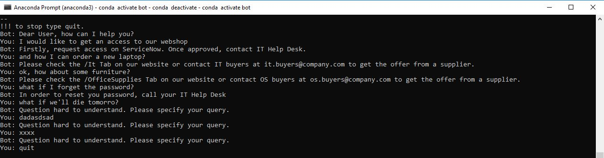

AI Procurement Chat Bot
Intro
- Script converts human's language into numbers.
- Each occurance of a word is being tracked down into a list which finally serves to train the ML model.
- Script takes advantage of tensorflow library that is commonly used for deep learning projects.
Features
App includes following features:
Demo
Application:
- At first, we need to learn a bot how to response depending on the question's pattern:
- if user asks questions similar to a pattern the bot was fed with during training, then bot is able to give a right answer back,
- bot compares user's question to a patterns it learnt, then it gives the best maching answer,
- there are ready patterns and responses given with JSON file which is data input for bot training,
- the category of what given pattern and corresponding response refers to, indicates JSON tag key. - Preparing so-called bag of words to put sentences down into, understandable for computer, digits:
- bag of words is being prepared for both a bot and an user,
- for bot, we train a bot to be able to decode human's language,
- for user, we translate what user says into computer's lanuage. - Bag of words depends on sequence of operations on humans language:
- sentences splitting into collection of single words called tokens:
'Hello World' --> ['Hello', 'World']
- words stemming:
'saying' --> 'say'
- words vectorization replacing occurances of each word with a number:
'Hello all, Hello world' --> [2,1,2,1] where 'Hello' occured twice, 'all' and 'world' once - Script uses TFLearn to build the Deep Neural Network consiste of:
- first layer of data input,
- x number of hidden layers in between first and last layer,
- last layer of data output as an outocme of goind data thorugh neuorns and so-called activation function.
Chatting with bot:
Setup
Python libraries installation required:
- pip install tensorflow
- pip install tflearn
- pip install nltk